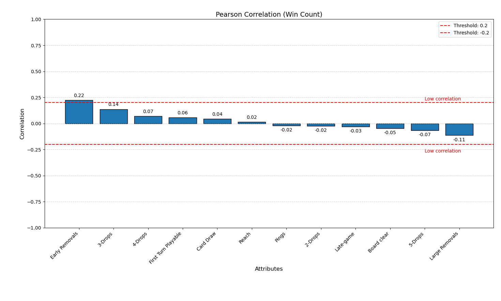
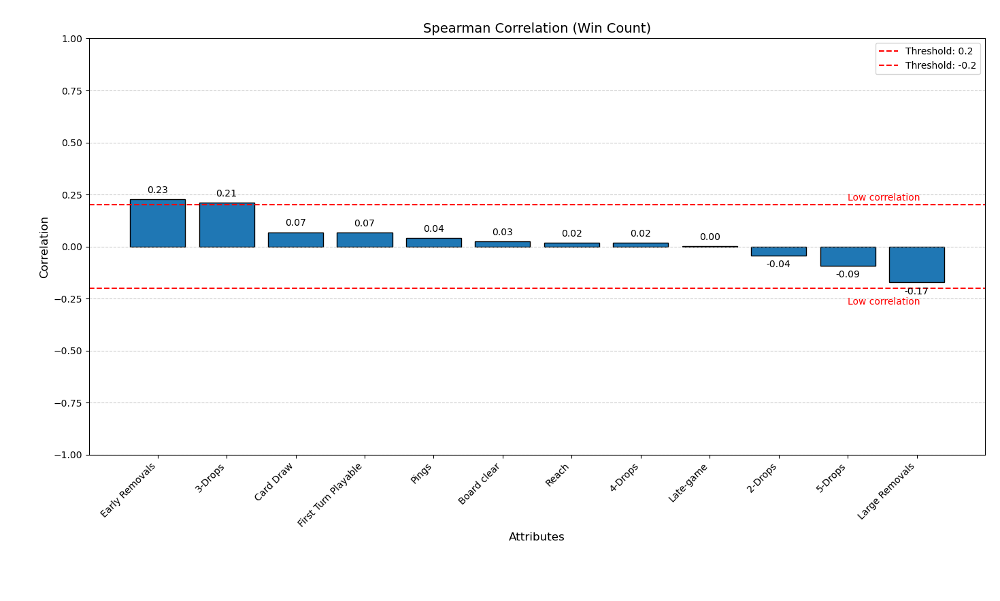
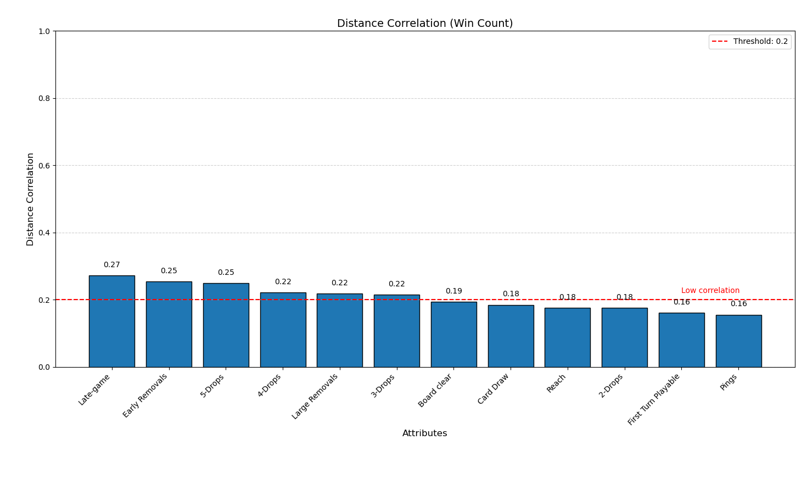
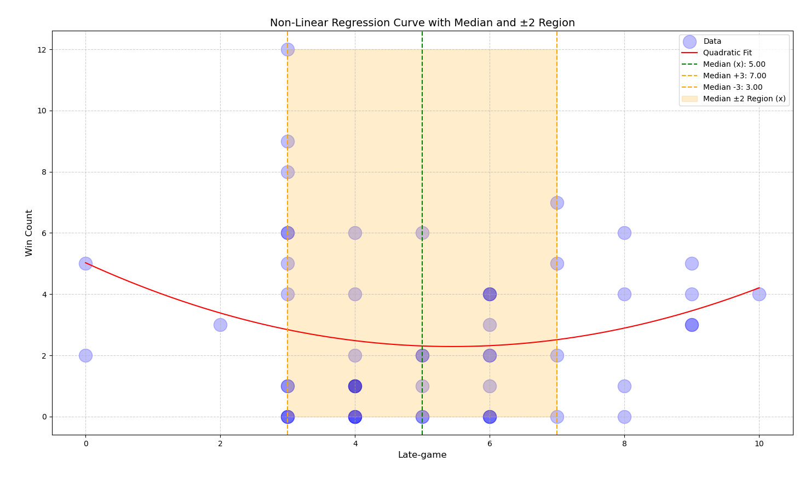
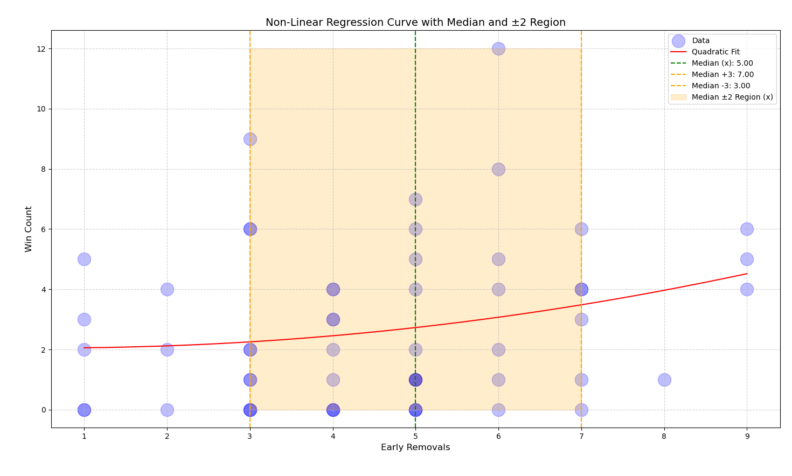
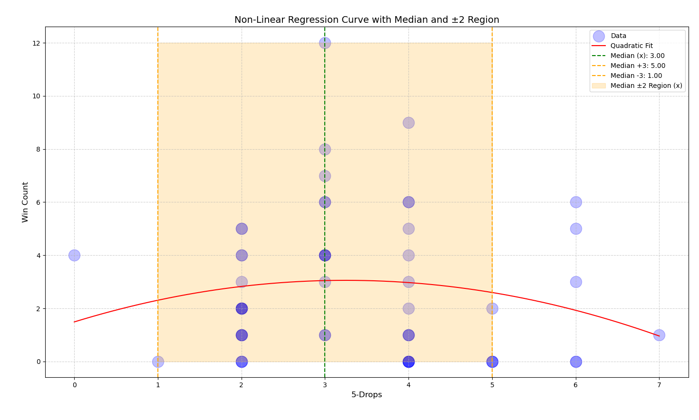
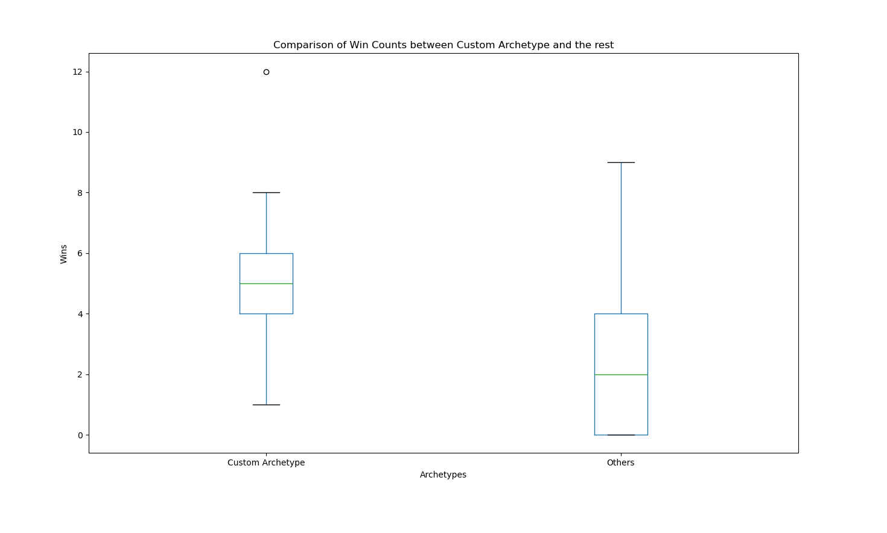

Finding 3
Even though commonly accepted archetypes exist, one might construct their own strategy. The aim of this section is to develop an off-meta solution: a custom archetype.
Null Hypothesis: The custom archetype does not significantly impacts win count.
Alternative Hypothesis: The custom archetype significantly impact win count.
Custom Archetype
Correlations
Pearson correlation (W).

Spearman correlation (W).

Distance correlation (W).
Thresholds
Thresholds were set based on the correlations of the attributes.
The top 3 highest attributes were selected from the distance correlation: S = [Late-game, Early Removals, 5-Drops]. For elements with at least low Pearson or Spearman correlation, the threshold was set to the Median. For others, the threshold was defined as the Median ±3 (lower and upper bounds). Non-Linear Regression Curve with Median and ±3 Region (Late-game).

Non-Linear Regression Curve with Median and ±3 Region (Early Removals).

Non-Linear Regression Curve with Median and ±3 Region (5-Drops).
Mann-Whitney U
Comparison of Win Counts between Custom Archetype and the rest.
The null hypothesis was rejected (Mann-Whitney U, p = 0.002).
In conclusion, the custom archetype significantly impacts the win count.